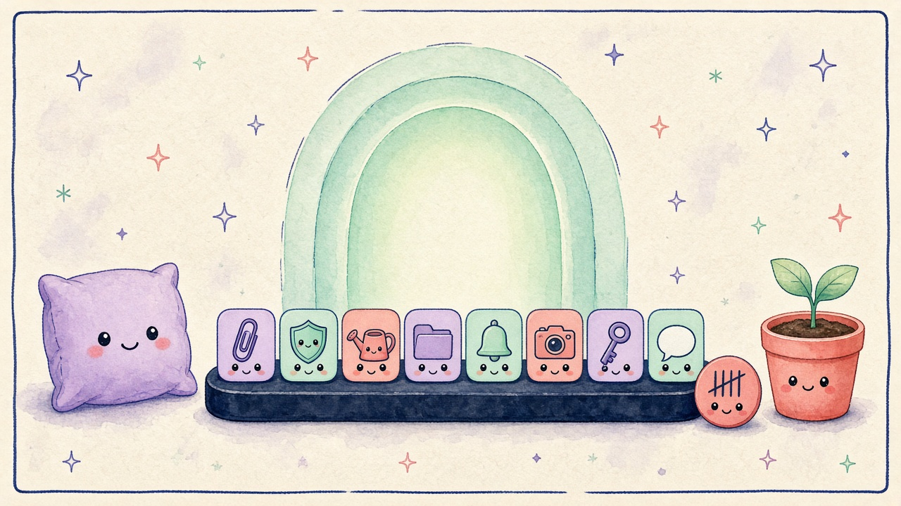

01 / Focus-Atmung und Schulden

Deutsch
Ruhig atmen am Dock
Tief ein. Eins gezählt.
Focus-Atmung leuchtet sanft im Dock. Das Schulden-Meter zählt nur abgebrochene Sessions — lokal, standardmäßig aus.
English
Breathe. Stay honest.
Soft glow. One tallied.
Focus breathing glows softly in the dock. The debt meter counts only broken sessions — local, off by default.